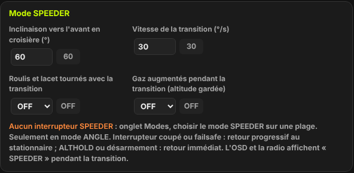
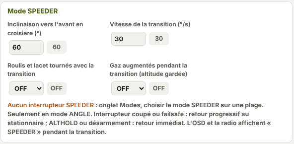
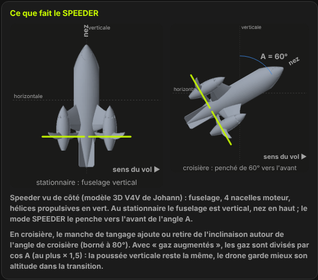
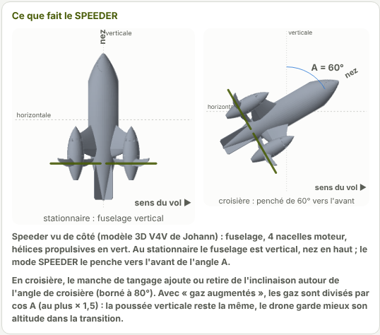
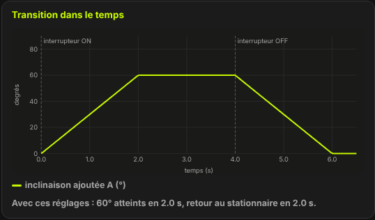
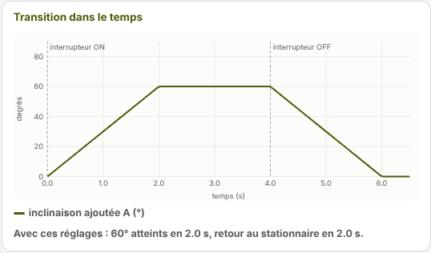
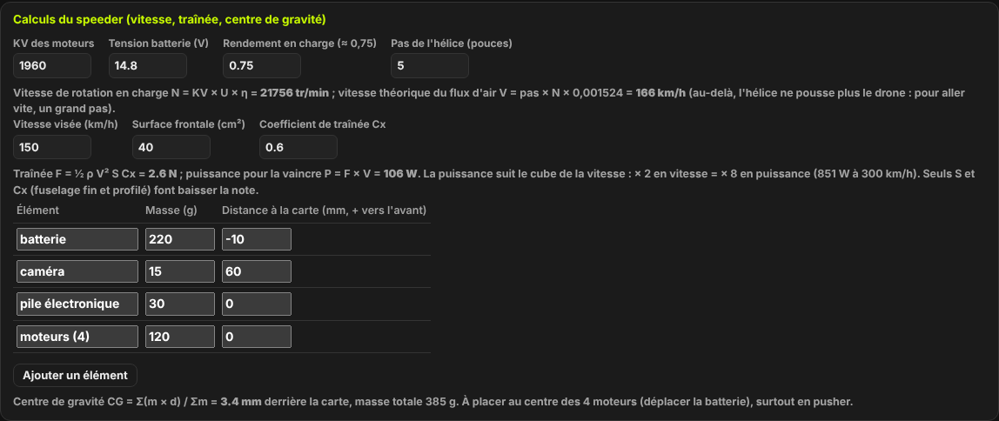
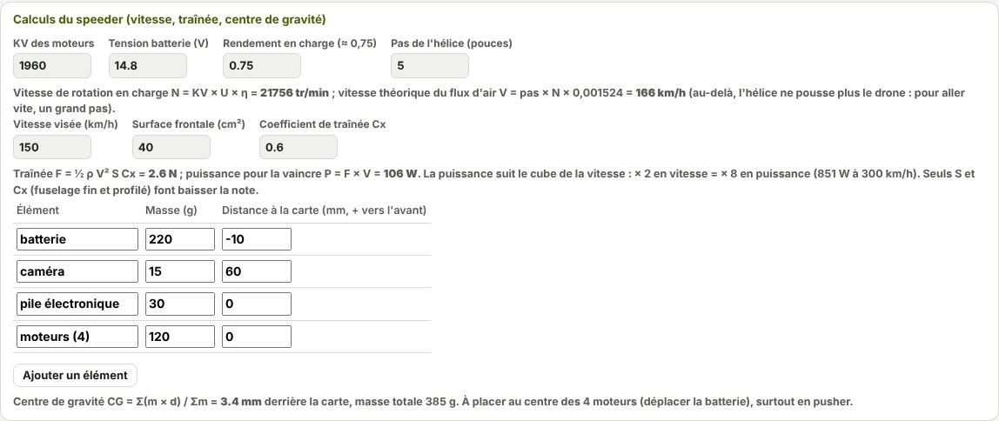

TRUEGLIDE
TRUEGLIDE Speeder
Le mode SPEEDER fait passer le drone du stationnaire au vol rapide, progressivement, sur un interrupteur. Il penche le drone vers l'avant jusqu'à l'inclinaison de croisière A, à vitesse réglée, puis le ramène au stationnaire quand on coupe l'interrupteur. Il ne marche qu'en mode ANGLE.
Les réglages


| Réglage | Rôle | Défaut | Plage |
|---|---|---|---|
Inclinaison vers l'avant en croisière speeder_cruise_angle | Angle A atteint en fin de transition (°). | 60 | 10 à 80 |
Vitesse de la transition speeder_transition_rate | Vitesse à laquelle l'inclinaison change (°/s). | 30 | 5 à 180 |
Roulis et lacet tournés avec la transition speeder_fpv_mix | Tourne les commandes de roulis et de lacet de l'angle A. | OFF | OFF / ON |
Gaz augmentés pendant la transition speeder_throttle_comp | Garde mieux l'altitude pendant la transition. | OFF | OFF / ON |
L'interrupteur
Le SPEEDER se met sur un interrupteur dans l'onglet Modes : choisir le mode
SPEEDER sur une plage d'une voie AUX. En ligne de commande, c'est le mode 120 de la commande
aux. L'onglet Speeder rappelle la plage réglée, ou affiche « Aucun interrupteur SPEEDER ».
La transition ne démarre que si tout est réuni : drone armé, mode ANGLE actif, attitude connue, liaison radio présente, pas d'atterrissage du failsafe. Pendant la transition, les lunettes et la radio affichent le mode SPEEDER.
La transition


- Interrupteur sur SPEEDER : l'inclinaison ajoutée A monte de 0 à
speeder_cruise_angle, àspeeder_transition_ratedegrés par seconde. - En croisière, le manche de tangage ajoute ou retire de l'inclinaison autour de A. L'inclinaison totale est bornée à 80°.
- Interrupteur coupé, ou failsafe : A redescend à 0 à la même vitesse. C'est le retour progressif au stationnaire.
- ALTHOLD ou désarmement : A revient à 0 tout de suite.


Roulis et lacet tournés
Penché de A, le drone ne tourne plus autour des mêmes axes vus par le pilote. Avec
speeder_fpv_mix sur ON, la carte tourne les commandes de roulis et de lacet de l'angle A :
- roulis appliqué = roulis × cos A − lacet × sin A ;
- lacet appliqué = lacet × cos A + roulis × sin A.
À A = 0 (stationnaire), rien ne change. C'est la même rotation que le mode FPV ANGLE MIX de l'onglet Caméra, mais avec l'angle de la transition au lieu de l'angle fixe de la caméra.
Gaz augmentés
Penché de A, le drone ne garde que cos A de sa poussée vers le haut. Avec speeder_throttle_comp sur
ON, les gaz sont divisés par cos A pendant la transition :
| Inclinaison A | cos A | Gaz multipliés par |
|---|---|---|
| 0° | 1 | × 1 (sans effet) |
| 30° | 0,87 | × 1,15 |
| 48° et plus | 0,67 et moins | × 1,5 (au plus) |
La hausse est bornée à × 1,5 et les gaz à 100 %. Elle ne s'applique qu'en mode ANGLE, et jamais pendant l'atterrissage du failsafe.
Calculs du speeder
Le cadre Calculs du speeder (vitesse, traînée, centre de gravité) aide à préparer un speeder. Les cases se changent à la main ; les résultats se recalculent.


| Calcul | Formule | Avec les valeurs de départ |
|---|---|---|
| Vitesse de rotation en charge | N = KV × U × η | 21 756 tr/min |
| Vitesse théorique du flux d'air | V = pas × N × 0,001524 | 166 km/h |
| Traînée | F = ½ ρ V² S Cx | 2,6 N à 150 km/h |
| Puissance contre la traînée | P = F × V | 106 W (851 W à 300 km/h) |
| Centre de gravité | CG = Σ(m × d) ÷ Σm | 3,4 mm derrière la carte, 385 g |
- Au-delà de la vitesse théorique du flux d'air, l'hélice ne pousse plus le drone : pour aller vite, un grand pas.
- La puissance suit le cube de la vitesse : deux fois plus vite demande huit fois plus de puissance. Seules la surface frontale S et le Cx (fuselage fin et profilé) la font baisser.
- Le centre de gravité doit être au centre des 4 moteurs : déplacer la batterie, surtout en pusher. Si le châssis n'est pas un X régulier, le mixeur personnalisé de l'onglet Moteurs utilise ce décalage.